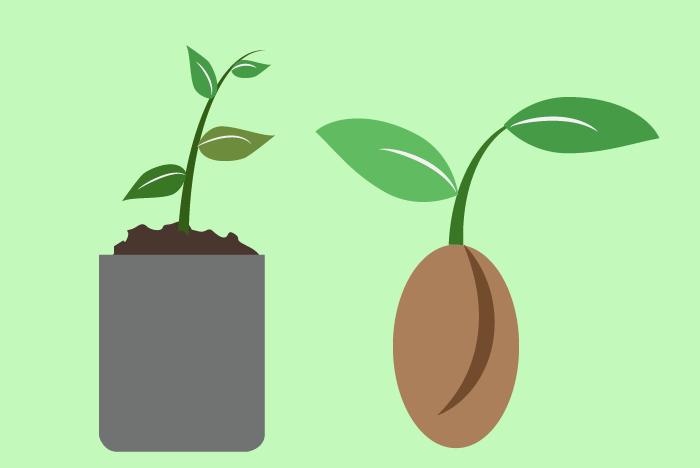
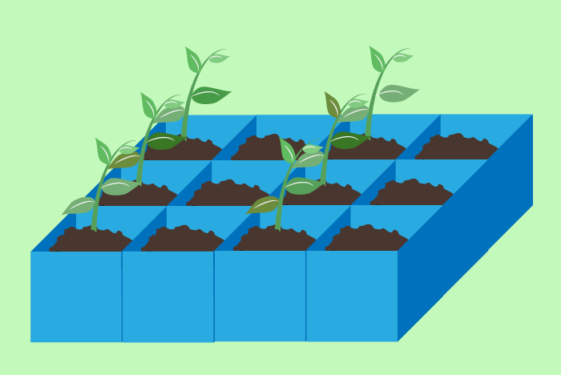
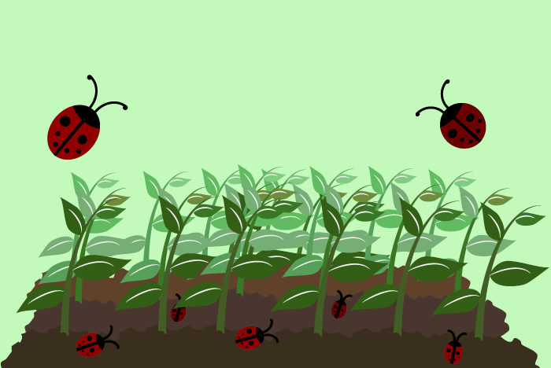
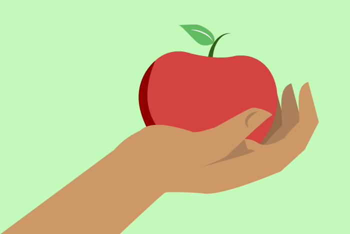
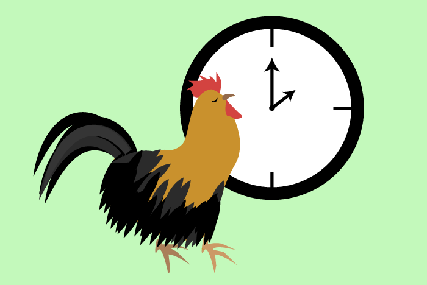
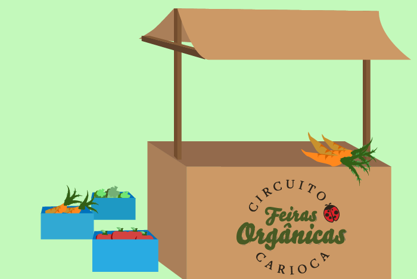
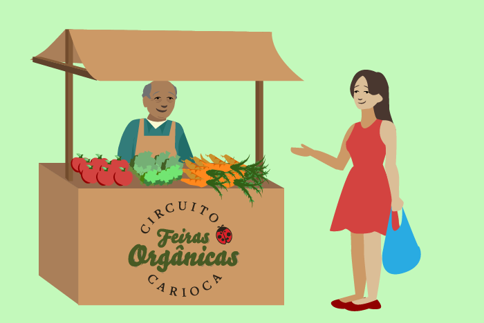

O produtor pode comprar mudas ou sementes, com as quais pode produzir as próprias mudas.

O plantio pode ser feito diretamente no solo ou em bandejas, que protegem as sementes mais frágeis.
Alguns dos produtores maiores do circuito utilizam tratores para arar a terra.
Para manter a plantação, a irrigação é fundamental. A água tem de ser limpa e na quantidade certa. Existem vários tipos de sistemas de irrigação, como a infiltração, a inundação, a aspersão, o gotejamento e o tradicional regador.

Também é preciso evitar as pragas, já que no cultivo orgânico não é feito o uso de agrotóxicos. Utilizam-se os inseticidas biológicos, permitidos para esse tipo de cultivo, caldas, outras plantas e animais que funcionam como inimigos naturais das pragas, como a joaninha.
Não podemos esquecer da pecuária orgânica! O gado não recebe antibióticos e é tratado com homeopatia. Além disso, os animais podem circular pelos cercados.
A rotação de culturas é uma prática essencial utilizada na agricultura orgânica, na qual os cultivos são alternados no terreno. Como plantas diferentes exigem da terra nutrientes diferentes, isso preserva o solo, evitando seu desgaste, além de garantir a biodiversidade.

A colheita manual ainda é a mais indicada para frutas e hortaliças, por não danificá-las.

Para chegar com os alimentos frescos na feira, os produtores têm que colhê-los na madrugada anterior.
Nesse tipo de agricultura, o transporte do alimento até a feira é feito pelo próprio produtor ou um de seus familiares, evitando que existam atravessadores que frequentemente se beneficiam mais que os agricultores.

Ao chegar no local da feira, o produtor encontra as barracas montadas por uma empresa contratada e organiza a disposição de seus produtos.

A feira serve como espaço de trocas no qual o consumidor pode conhecer mais sobre os alimentos que leva para casa.
PreviousNext